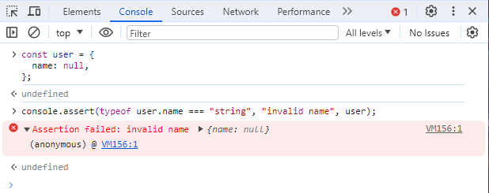
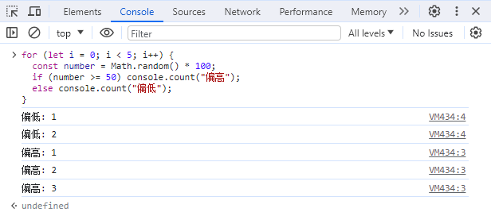
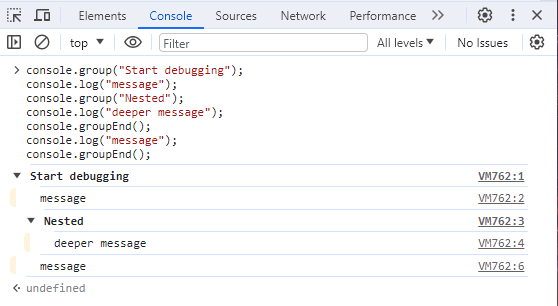
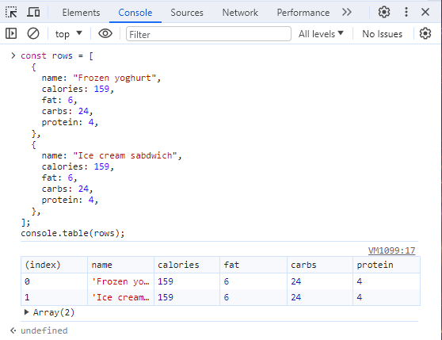
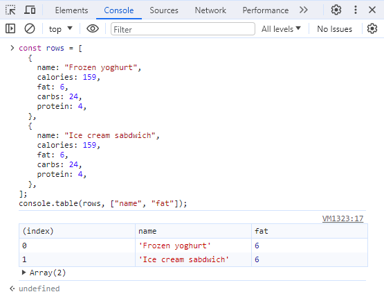
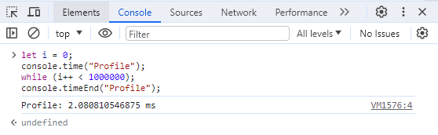
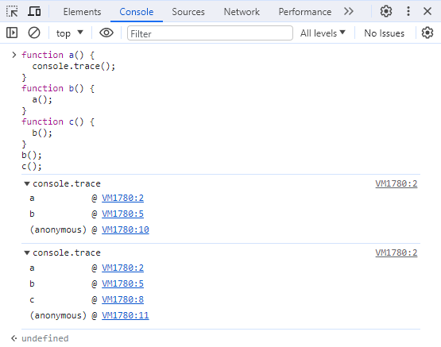
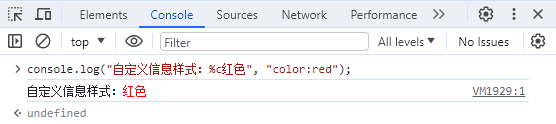
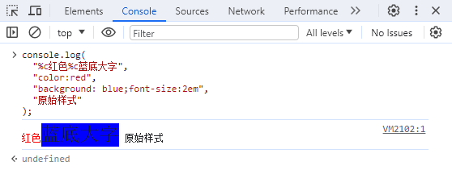

与 console.log 的作用相似，差别在于当第一个参数是 false 时才会打印出信息。
[false, null, undefined, 0, -0, 0n, NaN, ""] # false 值
举例，检查 user 对象的 name 属性是否为字符串，可能会编写以下程序代码：
const user = {
name: null,
};
if (typeof name === "string") {
console.log("invalid name", user);
}
这种情况可以使用 console.assert 省去 if 条件判断语句，不但编写的程序代码可以更少，而且在语义上也更清晰，条件不符就抛出错误
console.assert(typeof user.name === "string", "invalid name", user);

console.count 的默认参数为 default，可以作为计数器，累计特定标签出现的次数。
for (let i = 0; i < 5; i++) {
const number = Math.random() * 100;
if (number >= 50) console.count("偏高");
else console.count("偏低");
}

使用 console.countReset 来归零累计值，默认参数同样为 default。
console.countReset("偏高");
console.countReset("偏低");
console.group("Start debugging");
console.log("message");
console.group("Nested");
console.log("deeper message");
console.groupEnd();
console.log("message");
console.groupEnd();

使用 console.table 打印出对象或数组时，可以避免 Console 自动折叠内容，例如：
const rows = [
{
name: "Frozen yoghurt",
calories: 159,
fat: 6,
carbs: 24,
protein: 4,
},
{
name: "Ice cream sabdwich",
calories: 159,
fat: 6,
carbs: 24,
protein: 4,
},
];
console.table(rows);

console.table 会以表格打印出对象内容，一次显示更多信息，且可以参数改变显示的字段：
console.table(rows, ["name", "fat"]);
// 只显示 name 和 fat 属性

console.time 可以来测量程序代码的运行时间，启动定时器后，以相同的标签执行 console.timeEnd，就会停止计时并打印出标签名称和持续时间
let i = 0;
console.time("Profile");
while (i++ < 1000000);
console.timeEnd("Profile");

此外，可以在计时途中以 console.timeLog 打印出该定时器当前已累计的时间。
使用 console.trace 打印出当前的 Call stack。
function a() {
console.trace();
}
function b() {
a();
}
function c() {
b();
}
b();
c();

在信息后插入 %c 后，可以在接下来的参数中放入 CSS 来为信息加上样式。
console.log("自定义信息样式：%c红色", "color:red");

在信息中，可以插入多个 %c 搭配多个 CSS 参数，
console.log(
"%c红色%c蓝底大字",
"color:red",
"background: blue;font-size:2em",
"原始样式"
);
